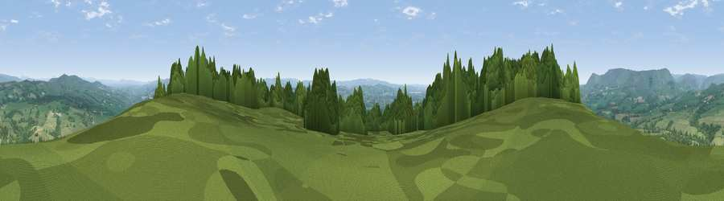

Viewpoint near Bashall Eaves
#7463 in England · top 15% of its area beats it · near Bashall EavesWhere it is
The exact computed spot (SD 67562 41338). Click the marker for map links.
The view, rendered

A 360° render of this exact spot computed from the terrain model, tree cover and land cover — summer colours, afternoon light, calibrated against photographs of famous viewpoints. Real trees, hedges and buildings will differ in detail.
The panorama
Grey silhouette: terrain skyline in each direction (720 bearings, Earth curvature and refraction included). Dashed green: skyline with trees (+15 m) and buildings (+8 m) as obstacles. Blue strip: how far the ground is visible on each bearing.
Where the view opens
Wedge length = distance to the farthest visible ground on that bearing (vegetation-aware). Rings at 10, 25 and 50 km.
What fills the view
62% grassland · 35% woodland · 3% cropland ·
Angular shares of the visible panorama (visual magnitude), not map area. Landscape diversity 0.35 (0–1 Shannon).
Key numbers
More beautiful places nearby
The staircase of upgrades: each row has a higher view potential than everything closer. Driving times are estimates from straight-line distance, calibrated against real road routing — check an actual route before setting out.
| Place | Direction | Drive | Score |
|---|---|---|---|
| Viewpoint near Chipping | W · 2 km | ~5 min | 69.2 |
| Viewpoint near Chipping | W · 2 km | ~6 min | 70.1 |
| Viewpoint near Chipping | WSW · 3 km | ~8 min | 73.4 |
| Viewpoint near Chipping | WSW · 4 km | ~10 min | 73.6 |
| Totridge Fell | NNW · 8 km | ~17 min | 75.1 |
| Parlick | WNW · 9 km | ~17 min | 77.5 |
| Viewpoint near Scorton | WNW · 17 km | ~30 min | 79.9 |
| Darwen Hill | S · 20 km | ~33 min | 80.7 |
53.86723, -2.49476 · source: screening · position refined by local search. Computed location — check access rights before visiting.